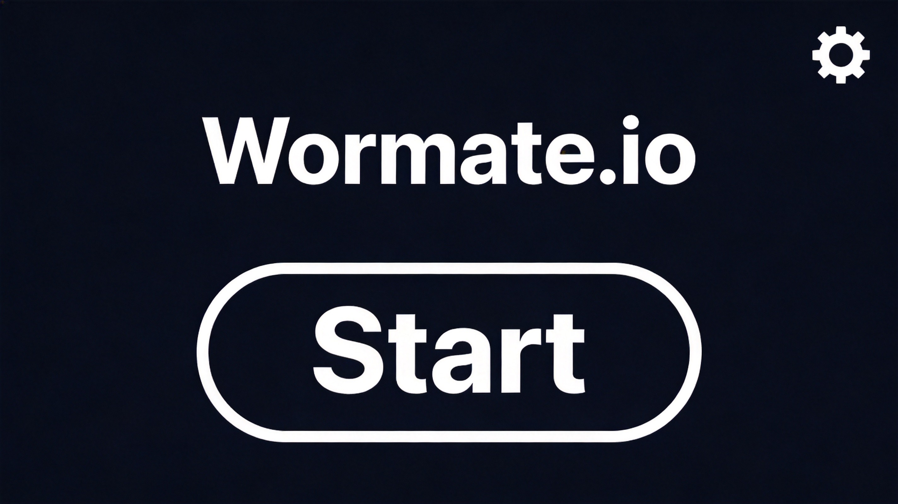
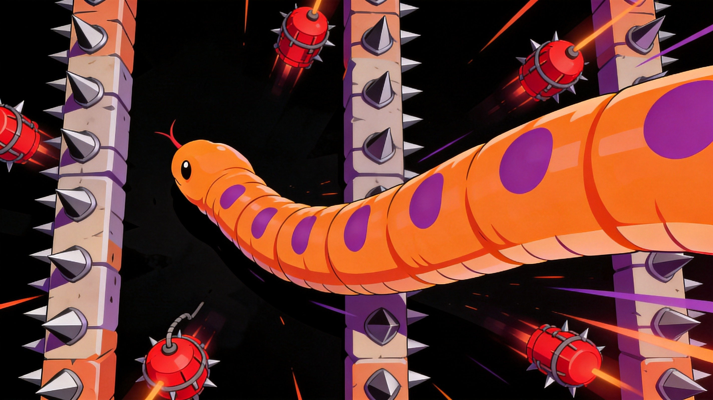

If Slither.io is a dark alley brawl, then Wormate.io is a neon-lit candy shop. This colorful cousin of the snake .io genre ditches the sci-fi aesthetic for something out of a fever dream — bright pastel maps, weird glowing food items, and worms that look like they escaped from a cartoon. The core loop is familiar (grow big, avoid dying), but the map variety, power-ups, and character customization give it a distinct personality. Here's how to actually get good at it.
🎯 Game Basics

The Objective
You're a worm. You eat things. You get bigger. You try not to die. Sound familiar? Here's the twist: Wormate.io has multiple game modes and rotating maps, each with different food types, obstacles, and hazards. No two matches feel the same.
Controls
- Mouse — Your worm follows your cursor. Simple, responsive, effective.
- Spacebar — Activate boost (costs body length)
- Right Click — Custom skin/emote menu (when available)
Game Modes
- Deathmatch — Standard free-for-all. Eat, grow, dominate. Classic snake rules.
- Team Battle — Cooperate with teammates against rival teams. Coordinate to trap enemies.
- Tournament — Competitive ranked play with brackets and prizes.
How You Die
Your worm has a body made of segments. If any part of your body collides with another worm's body or head, you explode into a pile of food items. Yes, your death literally feeds everyone around you. Poetic, right? This means large worms are both powerful and extremely vulnerable — one wrong move and you're everyone's dinner.
🗺️ Map Types
Wormate.io rotates through several maps, each with unique themes and food distributions. Knowing the map is half the battle.
Candy Land
Pastel colors, candy-cane obstacles, and an abundance of small, fast-respawning food items. This map favors quick, agile worms who can snap up food before larger competitors notice. Don't try to be the biggest worm here — be the fastest.
Ice World
Slippery terrain that affects your worm's movement slightly. Food spawns in clusters. The snowbank obstacles create natural corridors and chokepoints. Playing conservatively works well here — the map's layout makes aggressive play risky.
Jungle
Dense with obstacles, vine-like barriers, and food hidden in corners. This map rewards map awareness and players who explore the edges where others rarely go. Long worms struggle in tight spaces — stay mobile.
Space Station
Dark background with glowing elements. Some zones have reduced gravity (your worm moves slightly faster/slower). Power-ups are more common but so are ambushes. High risk, high reward.
🍬 Food & Power-Ups
Standard Food
Regular food items scattered across the map. Eating them adds segments to your worm. Priority target: the larger food items — they give more growth per piece, which means less time vulnerable while feeding.
Power-Ups
These special items spawn periodically and give temporary advantages:
- Speed Boost (Lightning Bolt) — Sudden burst of speed. Great for escaping or cutting off opponents. Use sparingly — it burns energy fast.
- Invincibility (Shield) — Pass through other worms without dying for a short duration. Excellent for aggressive plays or desperate escapes.
- Ghost Mode — Become invisible to other players' name tags and minimap indicators. Sneaky and devastating.
- Magnet — Attracts nearby food to you automatically. Fantastic in crowded areas where you can't freely navigate.
Don't chase power-ups blindly. If a power-up is in the open and surrounded by enemies, it's probably a trap. Weigh the risk before diving in.
🛡️ Survival Tactics
The Border Strategy
Large worms love the open center where they can maneuver freely. Smart players exploit this by hugging the map borders. You can't get flanked from behind when you've got a wall. Smaller worms thrive here by picking off scraps and growing quietly.
Circle of Death
When a massive worm dies, it explodes into dozens of food items. This is both an opportunity and a danger. Other players will rush in, creating chaos. Use the distraction to either grab food and leave, or pick off players who got too greedy and too big in the feeding frenzy.
Boost Economics
Boosting lets you move faster but shrinks your worm with each use. Each boost segment converts to a burst of speed. The key is timing — boost to escape an immediate threat, not just to get somewhere slightly faster. Wasteful boosting leaves you small and vulnerable.
Don't Be the Centerpiece
The biggest worm on the map is always the most targeted. Other players see a massive worm and immediately think "easy kill if I can box them in." Stay comfortably large but not the absolute largest. Let someone else hold the top spot and attract all the attention.
Cutting Off
The classic slither tactic: wrap around another worm so they collide with your body. In Wormate.io, this is harder on some maps due to obstacles, but the principle holds. Use the map's natural barriers to force opponents into dead ends.
💡 Pro Tips
- Watch the minimap constantly. Food spawns cluster, and enemy worms leave visible trails. The minimap is your best early-warning system.
- Customize your worm. It's not just cosmetic — certain skins blend better on specific maps, giving a subtle tactical advantage.
- Play the long game. Wormate rewards patience. Die once and a smart opponent will eat your corpse and double in size instantly.
- Join team mode to learn. Playing with experienced teammates teaches positioning and coordination faster than solo grinding.
- Respect the respawn. After dying, you're tiny again. Give yourself 30 seconds of stealth before making any bold moves.

❓ Frequently Asked Questions
Q: What's the difference between Wormate.io and Slither.io?
A: Wormate.io features colorful themed maps, more power-up variety, character customization, and multiple game modes. The movement and growth mechanics are similar, but Wormate's aesthetic and map rotation keep things fresh.
Q: How do I get coins in Wormate.io?
A: Coins are earned passively by surviving and growing. Longer worms generate more coins over time. Playing in tournaments and placing high also rewards bonus coins.
Q: Does Wormate.io have skin customization?
A: Yes, there's a full customization system with skins, eye styles, and mouth designs. Some are free, others require purchase with coins or real money.
Q: Can I play Wormate.io with friends?
A: Yes, use the private room feature to create a custom lobby and invite friends. Team Battle mode is especially fun with a coordinated squad.
Q: How do I avoid dying as a small worm?
A: Stick to the borders, avoid open areas where large worms patrol, and focus on small food items in safe zones. Patience is everything when you're starting out.
Q: What maps are best for beginners?
A: Candy Land and Ice World are the most forgiving. Food is plentiful and the maps are relatively open, giving beginners room to maneuver.
Q: Is Wormate.io free to play?
A: Yes, it's completely free in your browser. Cosmetic purchases are available but have no impact on gameplay.
Wormate.io is one of the more polished snake games out there — the maps keep it from getting stale, and the power-up system adds genuine tactical choices. Grab your favorite skin and go get fat.